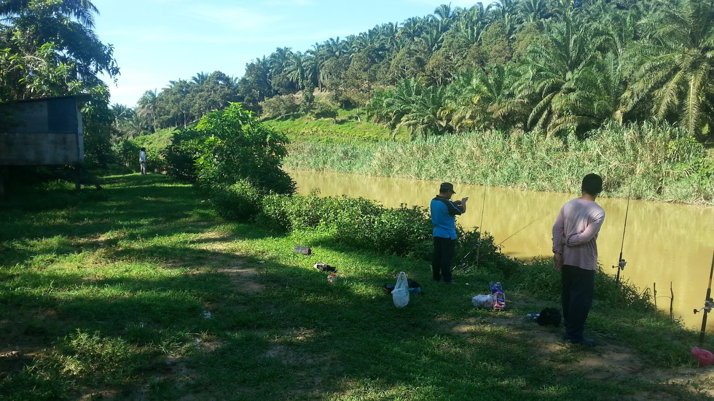
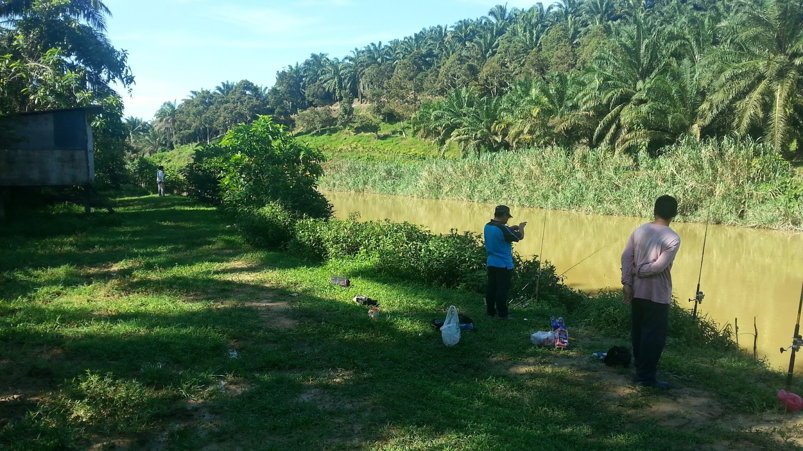
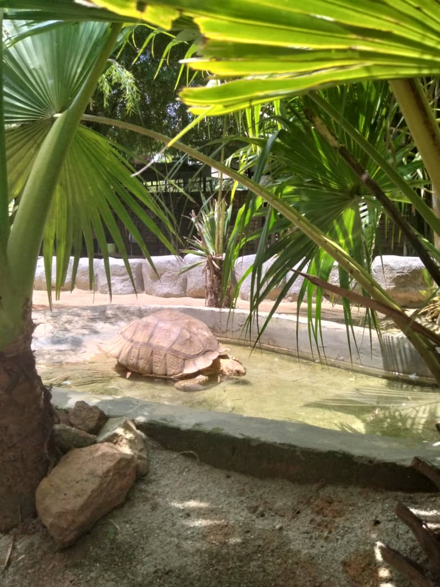
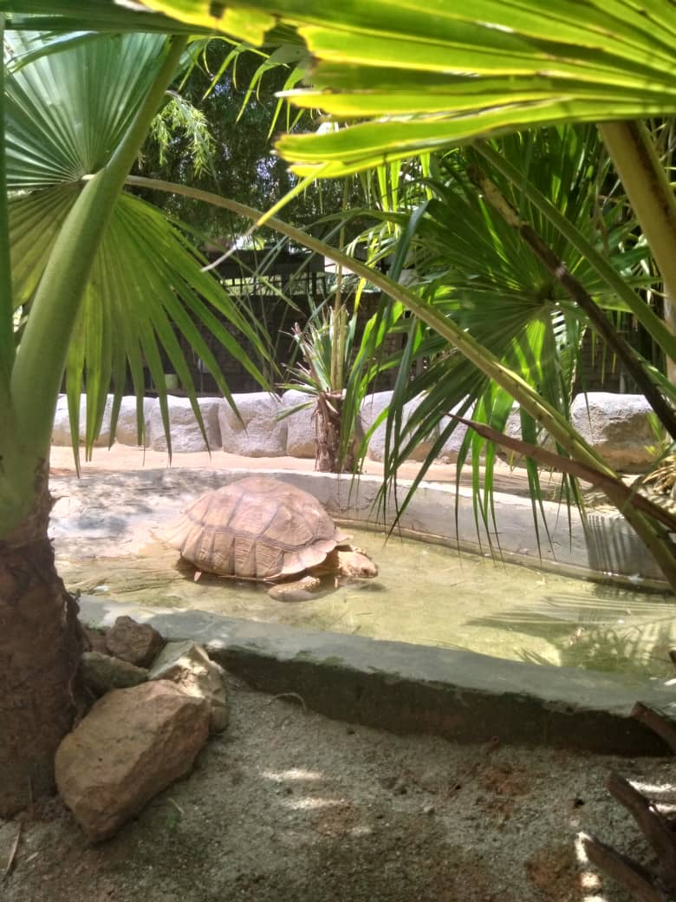

Activity in Pekan Bestari Jaya
 



1. Fishing Trip
Fishing enthusiasts can enjoy a variety of thriling diverse fishing experiences in town's gorgeous surrounding, making it a popular weekend getaway spot. Anglers seeking quiet time by the water or experienced professionals can both find the excitement of fishing in these beautiful lakes and flowing rivers.


2. Tram Ride
TREM RIDE is an internal vehicle to go from one point to another. The distance of the tourist route from 3 -4 kilometers is a fun trip. Visitors can see and enjoy the real atmosphere of the farm. It is definitely an unforgettable experience.


3. Rabbit Park
RABBIT PARK is the main attraction for visitors, especially children, to Selangor Fruit Valley. This place is suitable to visit in holiday. Here there is also a playground and an observation deck.


4. Deer Park
DEER PARK, the initial stop for the 'Tram Ride,' offers visitors a unique experience with Deer Demoransis species. Visitors can interactively feed the deer, fostering a connection with the wildlife in this picturesque setting.


 

5. Husin Fauzi Farm
Hussin Fauzi Farm is the fun and interesting activities for visitors, especially children. They offer affordable price for visitors to explore many cute animals such as bird, turtle, rabbits , fishs, and many more. This place is suitable to visit during weekdays and weekend. There are usually crowded during school holidays. Located at Kampung Bukit Badong, Bestari Jaya.